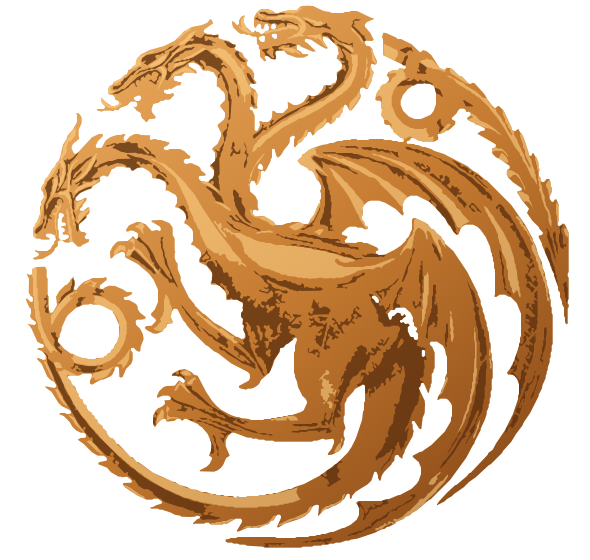

ARQUIVO DE
WESTEROS
☾
Tema
☰
Capítulos
UNIVERSO • GOT / HOTD
Quando Dragões Aprendem a Amar
Uma crônica de Westeros
Capítulo
A−
A+
Largura: confortável
CAPÍTULO I
Prólogo
← Capítulo anterior
1 / 1
Próximo capítulo →